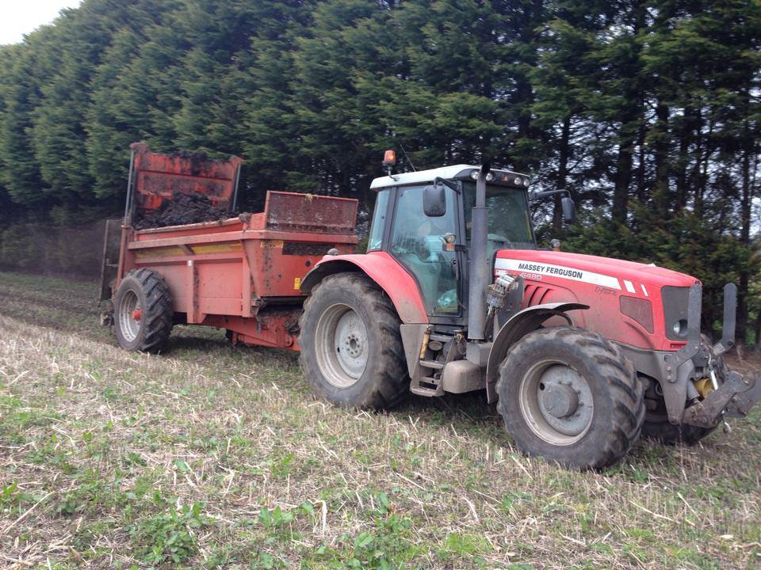
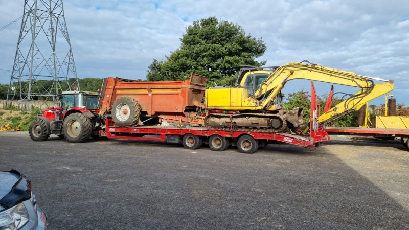

Manure Sprading

Our manure supply and spreading service provides a complete nutrient management solution, perfect for landowners looking to boost soil fertility without the hassle of sourcing their own manure. We handle the entire process: supplying high-quality, well-rotted manure, delivering it to your site, and applying it with our precision rear-discharge spreader for an even, consistent finish. For the customer, this revitalizes tired soil and promotes lush, healthy growth, ensuring your land gets the premium boost it needs to perform at its best.
Load and Spread Manure

Our 13-tonne excavator and spreading service provides the ultimate heavy-duty solution for tackling even the largest and most compacted muck heaps. By utilizing a powerful 360-degree digger, we can efficiently clear out awkward corners, deep pits, or field heaps that standard loaders struggle to reach, loading our high-capacity spreader with ease. For the customer, this combined approach means a faster, more thorough site clearance and a precision-spread finish on your land, turning a major waste management task into a streamlined, one-stop operation.